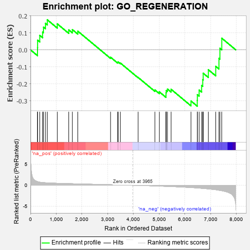

| | | Dataset | 7d |
| Phenotype | NoPhenotypeAvailable |
| Upregulated in class | na_neg |
| GeneSet | GO_REGENERATION |
| Enrichment Score (ES) | -0.3310199 |
| Normalized Enrichment Score (NES) | -0.91362214 |
| Nominal p-value | 0.6273292 |
| FDR q-value | 0.9398843 |
| FWER p-Value | 1.0 |
Table: GSEA Results Summary

Fig 1: Enrichment plot: GO_REGENERATION
Profile of the Running ES Score & Positions of GeneSet Members on the Rank Ordered List
| PROBE | GENE SYMBOL | GENE_TITLE | RANK IN GENE LIST | RANK METRIC SCORE | RUNNING ES | CORE ENRICHMENT | | 1 | ULK1 | | | 272 | 0.875 | 0.0115 | No |
| 2 | HGF | | | 276 | 0.870 | 0.0566 | No |
| 3 | LGR6 | | | 360 | 0.738 | 0.0847 | No |
| 4 | LRP1 | | | 470 | 0.648 | 0.1048 | No |
| 5 | MYOD1 | | | 504 | 0.628 | 0.1335 | No |
| 6 | CCNB1 | | | 581 | 0.601 | 0.1554 | No |
| 7 | EYS | | | 654 | 0.575 | 0.1763 | No |
| 8 | YAP1 | | | 1041 | 0.475 | 0.1525 | No |
| 9 | IFRD1 | | | 1486 | 0.392 | 0.1171 | No |
| 10 | CDK4 | | | 1626 | 0.370 | 0.1189 | No |
| 11 | GATA4 | | | 1837 | 0.330 | 0.1097 | No |
| 12 | GPX1 | | | 3109 | 0.135 | -0.0433 | No |
| 13 | PPAT | | | 3382 | 0.091 | -0.0728 | No |
| 14 | MED1 | | | 3405 | 0.089 | -0.0710 | No |
| 15 | GLI1 | | | 3489 | 0.079 | -0.0773 | No |
| 16 | PDX1 | | | 4179 | -0.038 | -0.1621 | No |
| 17 | BIN3 | | | 4832 | -0.165 | -0.2356 | No |
| 18 | KLF4 | | | 5005 | -0.198 | -0.2469 | No |
| 19 | PTEN | | | 5262 | -0.261 | -0.2655 | No |
| 20 | CDK1 | | | 5264 | -0.262 | -0.2520 | No |
| 21 | EPHA4 | | | 5273 | -0.265 | -0.2391 | No |
| 22 | CD9 | | | 5319 | -0.277 | -0.2303 | No |
| 23 | LRIG2 | | | 5460 | -0.310 | -0.2318 | No |
| 24 | RGN | | | 6233 | -0.547 | -0.3004 | Yes |
| 25 | SOX2 | | | 6477 | -0.652 | -0.2969 | Yes |
| 26 | DYSF | | | 6481 | -0.654 | -0.2632 | Yes |
| 27 | STK24 | | | 6550 | -0.684 | -0.2360 | Yes |
| 28 | PTPRS | | | 6646 | -0.738 | -0.2093 | Yes |
| 29 | CERS2 | | | 6689 | -0.756 | -0.1751 | Yes |
| 30 | EGFR | | | 6708 | -0.765 | -0.1374 | Yes |
| 31 | PTPRF | | | 6908 | -0.872 | -0.1169 | Yes |
| 32 | TSPO | | | 7194 | -1.065 | -0.0971 | Yes |
| 33 | GRN | | | 7319 | -1.194 | -0.0503 | Yes |
| 34 | WDR35 | | | 7357 | -1.225 | 0.0091 | Yes |
| 35 | KLF5 | | | 7429 | -1.304 | 0.0683 | Yes |
Table: GSEA details [plain text format]
Fig 2: GO_REGENERATION: Random ES distribution
Gene set null distribution of ES for GO_REGENERATION